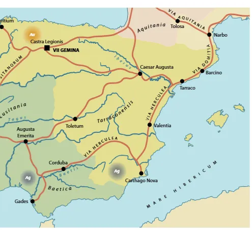
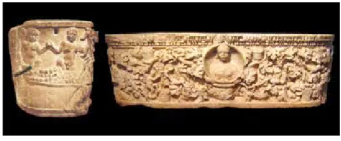

Chapter 1 · Brief overview of the history of viticulture in Portugal
The Time of the Roman Empire

Felicitas Iulia
In the time of the Roman Empire, grapevine varieties assumed such great importance that many of the indigenous varieties were brought to the colonies or later imported.
After the Punic tribes were banished from Iberia in the second century BC, Roman influence began to dominate the Iberian Peninsula. The Peninsula was opened up to traffic with Roman roads, pegged systematically with milestones. These calzadas romanas provided a network which served regional trade in wine and other products
Next, the territory was divided into two provinces: Hispania Citerior (“Nearer Spain”) and Hispania Ulterior (“Further Spain”), the former being South and West, and the latter being East, whilst the North, i. e., the stretch of land between the Pyrenees and Galicia, remained autonomous (See Fig. 2).
Seed and dried berry fossils of Vitis vinifera have been found in Portugal dating back to this period (Silva 1988, 16). One pioneer in this research was a prominent figure (Silva, ibid.), one Brother Manuel do Cenáculo [Villas Boas] (1724– 1814), of the Ordem Terceira de S. Francisco (Third Order of Saint Francis), Confessor to the Crown, member of the Royal Academy of Sciences of Lisbon, Bishop of Beja and Archbishop of Évora. He was a pedagogue and reformer, historian and cultural source of inspiration, founder of libraries, as well as a patron of Arab and archaeological studies in Portugal. Of interest here is the reference he made to discoveries in Roxo (Alvalade, Santiago do Cacém), of “dried grape berries” (Silva, ibid.).
There is evidence of Roman wine cultivation found everywhere in Portugal:
G. M. Pereira (1990: 58) writes on, “The Preservation of Wine Presses” (torcularium), whilst V. Loureiro (1994)

describes 83 such wine presses hewn in the rock);
Barros (1994) describes 50 different Roman wineries (apotheca); and Santos Banha (1994) classified the most diverse types of amphora, from examples found at Sellium and Tomar; the countless fragments of amphorae (dolia) provide ample justification for identifying these locations as Roman winemaking facilities.
In fact, the Romans substantially influenced the Iberian wine industry of the time both in terms of grapevine varieties and technological progress, with the introduction of the screw press, and different amphorae for the fermentation, transport and storage of wine. Mosaics depicting Bacchantes and amphorae were discovered at Torre da Palma (Monforte, Alentejo), Conímbriga and Mérida.
Since the Romans, however, the use of amphorae as luxury items was common (See Fig. 4). Johnson (1999:85) comments, “The idea of wine bottles may have originated with the Egyptians, but they came to Portugal with the Romans.” Other storage containers used included clay amphorae, and ceramic containers of various sizes, which would have been sealed with wax. Wooden barrels were also used.

Important fossils from the second century AD were found in a Roman-Lusitanian well in Idanha-a-Velha (Portugal), a significant settlement during this period. This discovery is the subject of a paper by Fernando de Almeida and Octávio da Veiga Ferreira, 1967, which examined the via romana [Roman road] between Emeritas (Merida) and Augusta (Braga).
Wine was very important, as was vinegar. Numerous clay amphorae with wine and vinegar residues were found at a port located at the estuary of the Sado River in Herdade da Barrosinha, near Alcácer do Sal. In addition to being used as storage, these clay containers were used to transport, and even export, wine
Archaeologists believe they have discovered one of the oldest wine presses in the Douro and Trás-os-Montes, dating from the 1st century AD, in Vale de Mir, where they have been studying the evolution of human occupation in the municipality of Alijó for four years. "It is the first time that a wine press from this period, the end of the 1st century AD, has been found in this part of Portugal," says the researcher.
The Roman Villa of São Cucufate, also known as the Ruins of Santiago, is a historical monument in Vila de Frades, in the municipality of Vidigueira, in Portugal. It consists of the ruins of a Roman complex with a wine press. The wine-growing culture of the Romans can still be seen today in the rich presence of Roman carvings. Huge carvings, each capable of producing around 400 to 500 litres of wine, following to the letter the traditional method introduced by the Romans to the Iberian Peninsula around 2,000 years ago have been included in the National Inventory of Intangible Cultural Heritage (Inventário Nacional do Património Cultural Imaterial – INPCI). But during this process we took advantage of everything we could associated with the application. The creation of this route came about as a result of this, taking advantage of the protocol that already existed with 22 municipalities and seven organisations that have thus joined together in a tourism product that brings together the whole of Alentejo, regardless of whether some of the municipalities are or are not part of the Alentejo.
Braga (Bracara Augusta) was built on the Roman city founded by Augustus. There are traces of Bracara Augusta all over the historic centre: whenever work is done, ruins and objects are found